Olá eu sou Romulo Beserra De Lima
Desenvolvedor iniciante
Olá, meu nome é Romulo, tenho 26 anos e resido em Rio das Pedras-SP. Sou aficionado por filmes e games, e foi justamente o interesse por games que despertou minha curiosidade por programação.
Iniciei este ano (2024) o curso de Análise e Desenvolvimento de Sistemas pela UNINTER, através de uma bolsa do Prouni. Até então apesar de conhecer um pouco sobre programação, nunca tinha escrito nem o codigo ou algo parecido.
Mas apesar de ser novato no mundo do desenvolvimento, espero aprender as habilidades necessárias para me destacar na área, e me tornar um bom profissional.